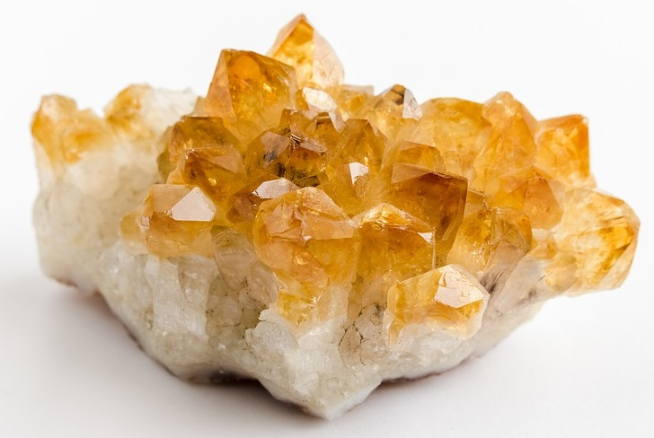

EL REINO MINERAL
El reino mineral abarca todos los elementos y compuestos químicos naturales, inorgánicos y sólidos que forman la corteza terrestre. Desde la antigüedad (por ejemplo, en las clasificaciones del científico Carlos Linneo), representa la materia inerte y fundamental que compone las rocas, el suelo, los cristales y las gemas.

Volver